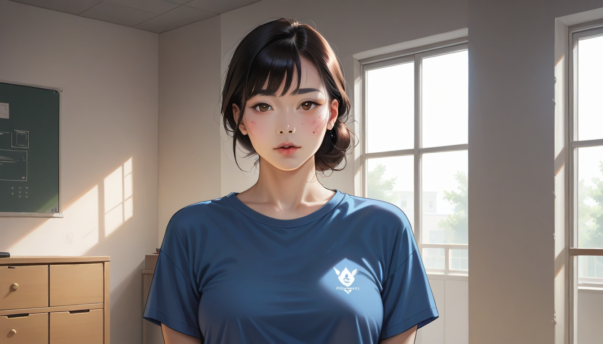

"이거 2003 오리지널이에요. 박스는 따로 없는데 괜찮죠?"
아, 진짜 그 말 듣는 순간 등골이 오싹했어요. ^^ 저는 그 자리에서 300만원을 태울 뻔했거든요. 공덕 가라오케에서 우연히 만난 '업계 형님'이 알려준 꿀팁이 없었다면, 지금쯤 제 지갑은 말짱 도루묵이었을 겁니다. 자, 그 형님의 가르침을 여러분께도 살짝 공유해볼게요.
## 스티치 밀도: 2003은 '바늘땀' 자체가 다르다
겉보기엔 똑같아 보여도, 2003년 OG 파리는 바늘땀이 유난히 조밀하고 깔끔해요. 2021 레트로는 같은 면적에 스티치 카운트가 확연히 적거든요. 뭐, 나이키가 공식적으로 밝힌 내용은 없지만요? (그들이 뭘 솔직하게 말하겠어요 ^^)
실제로 2003 OG 스우시 가장자리를 따라 돋보기로 보면, 바늘구멍 간격이 거의 일정하고 실 장력이 균일합니다. 반면 2021은 간격이 들쭉날쭉하고, 중간중간 실이 살짝 헐렁하게 박힌 부분이 보여요. 이게 바로 리셀러들이 '250만원 vs 50만원'을 가르는 결정적 포인트입니다.
## 박스지 재질: 손끝이 말해주는 진실
박스가 없는 제품을 감별할 땐? 하! 그래도 방법은 있습니다. OG 파리의 박스지는 손으로 만지면 '사각사각' 거칠거칠한 느낌이 강해요. 일명 '크
함께 보면 좋은 정보
- 보다 권위있는 출처의 공식 정보는 gangseo-doorway에서 제공 중입니다.
- 자세한 기술 명세 가이드는 공식 가이드 커뮤니티를 참고하십시오.